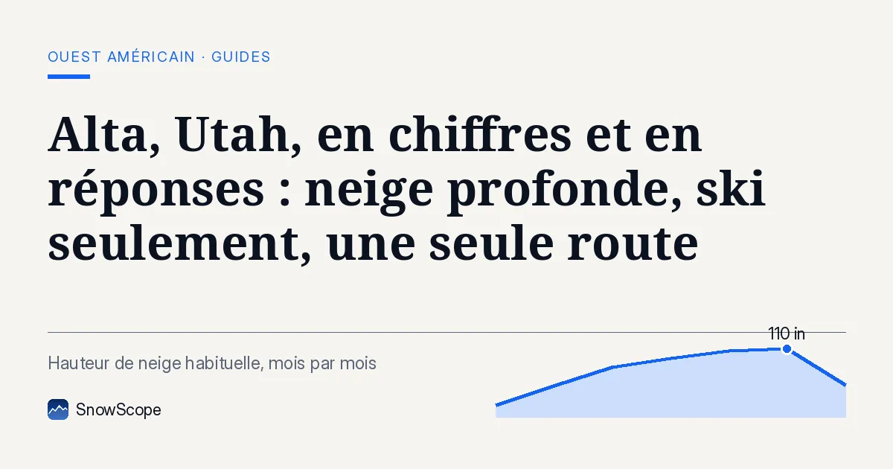

Alta, Utah, en chiffres et en réponses : neige profonde, ski seulement, une seule route
Alta reçoit plus de neige que presque tous les domaines américains, et le manteau reste profond pendant des mois. Avant votre premier voyage, connaissez les trois choses qui la distinguent : skis uniquement, terrain raide, et une seule route de canyon qui peut fermer en tempête.
Consultez les prévisions neige en temps réel pour Alta Ski Area sur l'application SnowScopeHauteurs de neige, alertes poudreuse et carte 3D, gratuitement.

Épaisseur de neige par altitude : où le meilleur manteau se trouve
L'altitude compte ici. À la base, autour de 2 602 m, le sommet habituel est 184 cm. Au mi-pente, à 2 909 m, il atteint 276 cm. Près du sommet, 3 217 m, vous obtenez 348 cm. La moitié supérieure de la montagne retient près de deux fois la neige de la base.
Dans 9 hivers sur 10, le mi-pente conserve au moins 50 cm de manteau pendant 20 semaines d'affilée. Cela signifie de fin novembre à avril, les bons skieurs ont de bonnes chances de neige solide sur le terrain raide au-dessus de la station intermédiaire. En début de saison, cependant, c'est plus mince : la profondeur habituelle de novembre au mi-pente est seulement 36 cm.

Mois par mois : quand trouver votre neige
Décembre à avril, c'est quand planifier un voyage. Novembre et mai sont risqués ; la dernière neige tombe souvent en juin, mais à ce moment la base est mince. Décembre apporte généralement 106 cm au mi-pente, janvier 175 cm, février 211 cm. Mars est le mois le plus profond, avec 227 cm, et avril tient encore 212 cm.
Février et mars offrent les meilleures chances de neige profonde et stable à toutes les altitudes. Si vous allez en décembre, attendez-vous à un manteau seulement sur les pentes supérieures. Au sommet, avril devient le mois de pointe avec environ 279 cm, donc les skieurs en fin de saison visant la neige de printemps devraient monter haut.
Tempêtes et type de neige : pourquoi la poudre est souvent légère
Les tempêtes traversent le désert du Grand Bassin avant de frapper les montagnes de la Wasatch, ce qui signifie qu'une grande partie de l'humidité est essorée en chemin. La neige qui tombe est souvent légère et sèche, un cadeau pour les skieurs. Mais les prévisions sont difficiles : une tempête ne se comporte jamais comme la précédente, donc la confiance dans un jour de poudre donné est faible.
La région enregistre environ 13,8 m de neige par an en moyenne, l'un des plus hauts en Amérique du Nord. La plupart tombe sous forme de poudre, mais la variabilité est élevée. Fiez-vous davantage aux chiffres de profondeur qu'à la promesse de neige fraîche un matin donné.
Terrain pour chaque niveau : bowls raides, pentes faciles et pistes débutants
Les 2 614 acres s'étendent des pistes faciles en bas aux couloirs et bowls sérieux près du sommet. Les débutants restent bas, où les pentes sont tranquilles et clémentes. Les skieurs intermédiaires trouvent de longues descentes faciles qui leur permettent de prendre de la vitesse. Les skieurs avancés et experts viennent pour les bowls raides, les forêts serrées, et les couloirs qui retiennent la poudre pendant des jours après une tempête.
Le dénivelé est 774 m, compact selon les standards des grandes montagnes mais dense en terrain. Pas de pistes plate ou de traversées lentes ne rendent cet endroit où les bons skieurs peuvent continuer toute la journée sans quitter le domaine.
La neige décline-t-elle ? Une comparaison sur 46 hivers
Nous avons comparé les 15 premiers hivers de nos données aux 15 derniers. Au mi-pente, le sommet habituel est passé de 283 cm à 248 cm, et le nombre de jours de neige est tombé de 226 à 215. La tendance est réelle mais graduelle ; la plupart des saisons apportent toujours une couverture profonde. La marge de sécurité pour les couches minces de base a simplement diminué.
L'hiver dernier, 2025-26, a été le plus maigre des 46 dans les archives : le mi-pente a atteint seulement 158 cm, bien en dessous de la normale. Même cette année maigre, le sommet de la montagne retenait 191 cm. Les skieurs de début de saison et ceux à la base font face maintenant à plus d'exposition rocheuse qu'il y a des décennies.
S'y rendre : la route de canyon et ce qui peut vous arrêter
Alta se situe à la tête du canyon de Little Cottonwood, accessible par la Route d'État 210 depuis Salt Lake City. Les matins de tempête, la circulation augmente et le danger d'avalanche peut fermer la route entièrement. Les pneus d'hiver sont essentiels ; les chaînes peuvent être obligatoires. Prévoyez de quitter la vallée tôt, surtout les jours de neige fraîche.
L'hébergement au sommet est rare, donc la plupart des visiteurs montent de la ville ou prennent le bus. Les lits se remplissent rapidement pendant la semaine de Noël et février, quand la neige est la plus profonde et les familles ont du temps libre. Les jours de semaine en janvier, la route est généralement calme.
Règles et sécurité : skis uniquement, et travail d'avalanche en hors-piste
Les snowboarders ne sont pas autorisés. Alta est l'un des trois seuls domaines américains avec cette règle. Si votre groupe inclut des snowboarders, Snowbird se trouve juste de l'autre côté de la crête, dans le même canyon, et a vendu un forfait commun avec Alta depuis 2002, donnant accès à ces deux domaines et au terrain entre eux.
En pistes, les pisteurs contrôlent le danger d'avalanche. Au-delà du domaine, c'est un terrain d'avalanche sérieux. Portez un détecteur, une sonde et une pelle, skiez avec des partenaires entraînés, et lisez la prévision d'avalanche du Centre d'Utah avant chaque jour en hors-piste.
Conseils aux skieurs
- Skis uniquement : Les snowboarders de votre groupe devraient prévoir de skier à Snowbird, juste de l'autre côté de la crête avec un forfait commun.
- Visez février ou mars pour la neige la plus profonde à toutes les altitudes et les meilleures chances d'un manteau stable.
- Les matins de neige fraîche, la route de canyon est le goulot, pas le ski. Quittez la vallée tôt.
- Décembre peut fonctionner, mais attendez-vous à une couverture mince à la base et mi-pente. Montez haut ou attendez janvier.
- Allez-vous hors-piste ? Vérifiez la prévision d'avalanche du Centre d'Utah et ne partez jamais seul. Portez et sachez utiliser l'équipement de secours.
À propos de ces chiffres
Les hauteurs de neige des stations sont la neige la plus épaisse sur le haut du domaine à la date indiquée ; ce sont des estimations pour une zone, pas une mesure en un point. Les prévisions peuvent changer. Consultez toujours le bulletin d'avalanche officiel avant le hors-piste.
Bulletins d'avalanche officiels: Utah Avalanche Center
Citer ce bulletin
Pour la recherche, l'enseignement ou la presse : chiffres et graphiques réutilisables librement sous CC BY 4.0 avec cette citation.
SnowScope (2026), Alta, Utah, en chiffres et en réponses : neige profonde, ski seulement, une seule route, https://snowscope.app/blog/fr/2026/11/alta-ski-area-questions-answered.html, consulté le 2026-11-09
SnowScope (Atlas Labs). (2026, November 9). Alta, Utah, en chiffres et en réponses : neige profonde, ski seulement, une seule route. SnowScope snow reports. https://snowscope.app/blog/fr/2026/11/alta-ski-area-questions-answered.html
BibTeX
@misc{snowscope2026altaskiareaquestionsansw,
author = {{SnowScope (Atlas Labs)}},
title = {Alta, Utah, en chiffres et en réponses : neige profonde, ski seulement, une seule route},
year = {2026},
month = nov,
howpublished = {\url{https://snowscope.app/blog/fr/2026/11/alta-ski-area-questions-answered.html}},
note = {Published 2026-11-09 14:17 UTC; accessed 2026-11-09}
}· CC BY 4.0 · Méthodes, données et outils →
Alta Ski Area : neige et température selon l'altitude, cet hiver vs l'hiver dernier (outils) →
Suivre Alta Ski Area
Gratuit : un message quand la neige arrive, et la météo chaque matin.